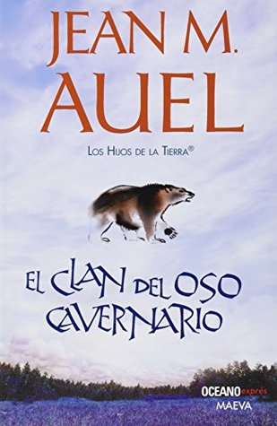

El clan del oso cavernario
Reseña por Jorge I. Zuluaga

Ver reseña en GoodReads (necesita cuenta)
Conocí este libro por mi amigo Juan Fernando Salazar quién me pidió hace algunas navidades que le ayudará a conseguir copias impresas de la saga completa. El motivo era que quería preparar un regalo sorpresa para su esposa, mi también amiga Angela Rendón y quien resulto ser una fanática de los libros de Jean M. Auel, la autora.
Mi primera impresión de los libros de la saga es que se trataba de literatura juvenil, aunque Angela era una adulta ¿por qué le gustaban tanto?.
Las múltiples ediciones que se han publicado y se siguen publicando de la saga desde que apareció el primer libro a principios de los 1980, tienen siempre esa apariencia de libros de aventura con carátulas coloridas y mostrando siempre figuras que les hacen atractivos a la vista. En suma, libros que consumen en su mayoría personas jóvenes.
Pero como toda primera impresión, está también estaba cargada de sesgos inconscientes.
Para empezar la literatura juvenil puede llegar a ser tan o más sofisticada que el resto de la literatura, de modo que no es del caso hacer una distinción o pensar que por tener una caratula colorida la obra esta dirigida a un público no adulto. Es más, en el caso particular de "El clan del oso cavernario", que obviamente no considero ahora sea un libro de literatura juvenil por supuesto, espero de verdad que en caso de haber sido leído por mucha gente joven en estos 40 años, haya cumplido bien su cometido de enganchar a un montón de lectores y lectoras con esta obra asombrosa y con la increíble cantidad de buena ciencia que contiene. Todo parece indicar que sí, tal y como lo refleja la increíble cifra de 45 millones de personas que han leído sus libros en todo el mundo.
A pesar de mis engañosas impresiones, y tocado por el bicho de la curiosidad de que una amiga como Angela, que es además una científica reconocida, fuera fanática de la obra de Auel, me anime a conseguir mi copia propia, al menos la del primer libro, y ver te que iba la saga. El tema, para empezar, no podía ser mejor para mí: una ficción sobre la vida de los humanos en tiempos prehistóricos.
Siempre me ha llamado poderosamente la atención la historia de nuestra especie y en general de todas las especies de humanos que vivieron en el que conocemos como el período paleolítico. Aunque se que otros autores y autoras han abordado el tema, tanto en la literatura como el cine, mi exposición a esas ficciones me ha mostrado que nuestro imaginario sobre el pasado está demasiado cargado con lo que sabemos sobre el presente. Que no hay formas "limpias" de reconstruir lo que paso hace decenas de miles de años, ni siquiera con nuestra propia especie.
Bueno, eso fue hasta que leí "El clan del oso cavernario".
No esperaba sinceramente encontrarme con una autora con los conocimientos, la intuición humana y científica, la creatividad y en suma con la genialidad de Juan Auel.
Auel, en lugar de restringirse a narrar la vida de un grupo de humanos durante uno de los períodos glaciales del pasado, se mete en "camisa de once varas" y decide contar la historia del encuentro entre dos especies humanas: Homo sapiens y Homo neanderthalensis (Neandertales en breve y en lo sucesivo).
Sencillamente ¡genial!
Es un hecho bien conocido hoy, gracias a los avances en paleoantropología y especialmente en biología molecular, que las dos especies más recientes del género Homo -o humanos en breve- convivieron en regiones de Europa durante los últimos dos o tres períodos glaciares. En el proceso sufrieron lo que en biología se conoce como hibridación o en palabras llanas, tuvieron sexo y dejaron descendientes. Como producto de esta hibridación, algunos genes, que sabemos eran exclusivos de nuestros hermanos Neandertales, quedaron en el genoma de Sapiens y allí están, al parecer, produciendo un recuerdo genético de un pasado con una diversidad humana más amplia.
Lo que no sabemos exactamente, y las moléculas de ADN y muchos restos arqueológicos no pueden contarnos, es cuáles fueron las condiciones en las que ocurrió esa hibridación, es decir, bajo que circunstancias machos y hembras de ambas especies se encontraron, superaron sus diferencias físicas -por no decir genéticas que sabemos que no fueron obstáculo-, sus diferencias culturales y lingüísticas y pudieron finalmente reproducirse.
Este es precisamente el tema del primer libro de esta increíble saga. ¡No les parece genial!
Podría uno pensar, sin embargo, que es fácil imaginarse algunos de esos encuentros. Tal vez las diferencias físicas y culturales no fueron tan grandes y el amor interespecífico no fue tan raro en el paleolítico. O tal vez, y más perturbadoramente, las hibridaciones se produjeron por violaciones y nunca en encuentros pacíficos, como sabemos ha ocurrido entre especies de primates modernos.
Pero no. En realidad la tarea de imaginar este cruce entre especies es particularmente difícil y es allí donde la genialidad de Auel me dejo de una sola pieza.
Para empezar, la autora tuvo que resolver el problema de la comunicación entre dos tipos de mentes humanas, una posiblemente similar a la nuestra (la mente de los Sapiens paleolíticos) y una mente completamente extinta.
El problema más serio es que lo que pasaba en mente de los Neandertales, cuya estructura cerebral desconocemos casi completamente, solo puede deducirse a partir de algunos restos encontrados, por ejemplo objetos artísticos, enterramientos, entre otros. Estos restos nos dan algunas pistas de su cultura y nos muestran que era más sofisticada de lo que se podría pensar en un principio. Pero nada más. Lo que puedas decir a partir de ahí sobre lo que pasaba por la cabeza de los Neandertales corre por cuenta de la imaginación literaria.
De otro lado esta la mente de los Sapiens del paleolítico, o "los otros" como les llaman los Neandertales de la saga de Auel. Aunque parece fácil imaginarse lo que pensaba un humano de hace 50.000 años, la verdad es que también es difícil. Si nos queda fácil imaginarnos lo que piensan personas de culturas lejanas pero contemporáneas, ya se imaginaran el salto que debemos dar para ponernos en la piel de una mujer Sapiens paleolítica.
Para lograrlo Auel realiza la hazaña de inventar, no solamente un lenguaje Neandertal -o uno de muchos que existieron seguramente entre ellos-, sino también crear casi desde cero -aunque a imagen de las culturas Sapiens-, una cultura, una religión, un modo de ver el mundo humano, pero Neandertal. A través de cientos de páginas, Auel te transporta a las mentes de estos humanos, te introduce en la culturas lamentablemente hoy extintas. En el proceso te ves obligado a hacer un ejercicio de otredad que difícilmente puedes hacer, incluso con casi cualquier otra obra literaria, en su inmensa mayoría protagonizada solamente por Sapiens.
La obra abunda en descripciones abrumadoramente pormenorizadas de los lugares de un mundo desconocido, la Tierra de una era glacial, de animales extintos, incluyendo sus características físicas y comportamientos particulares, y lo más increíble, una enorme diversidad de plantas, en especial plantas con aplicaciones medicinales. Estoy completamente seguro que Jean Auel es una experta en el tema. Y es que no puedo imaginarme a una escritora aficionada a la botánica y con una enciclopedia capaz de producir las descripciones increíblemente pormenorizadas de las plantas y sus efectos que hay en esta novela.
Cada cosa me sorprendía más que la anterior.
Debo confesar que este nivel de detalle puede restarle atractivo a la novela en algunos apartes. Incluso puede llegar a ser la causa de que algunas personas la abandonen sin terminarla. No les culparía. En muchas ocasiones me sentí transportado a los interminables -y posiblemente insoportables- capítulos de la gran novela "Moby Dick" en los que Melville en los que el autor, aparentemente sin buenas razones, se dedica a hacer un pequeño tratado de ballenología (sic.). Ahora que lo digo "El clan del oso cavernario" se podría llamar la Moby Dick de la paleoantropología.
Tenemos pues ante nosotros no solo una bella novela inspirada en el encuentro entre los humanos del pasado, sino también una obra de divulgación paleontológica y biológica escrita en código literario y que, creo, no tiene parangón en la literatura. Un verdadero viaje a la otredad de las personas que habitaran la Tierra mucho antes de que Sapiens ganará la batalla por la supervivencia en un planeta cambiante.
Naturalmente quede enganchado con la saga. Por aquí seguiré reportando mis avances con los otros libros. Ya empecé con el Valle de los Caballos.